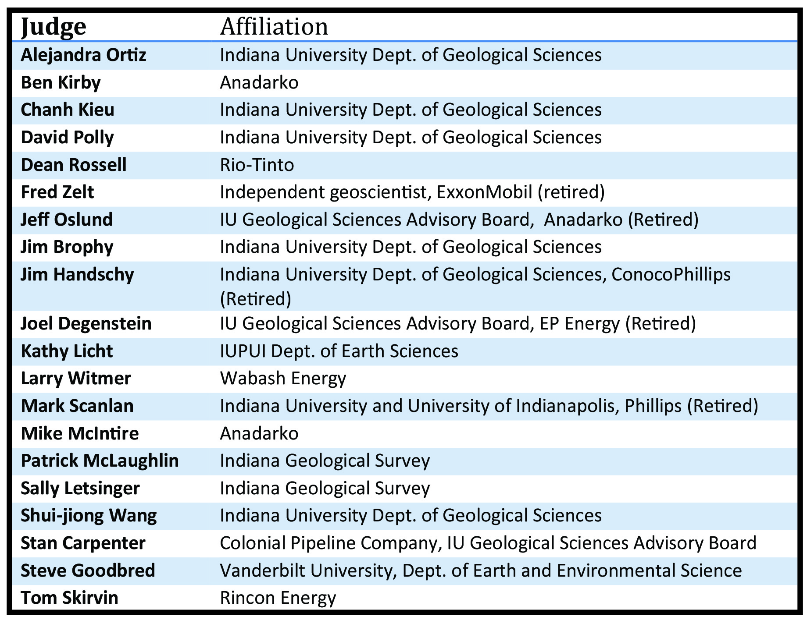
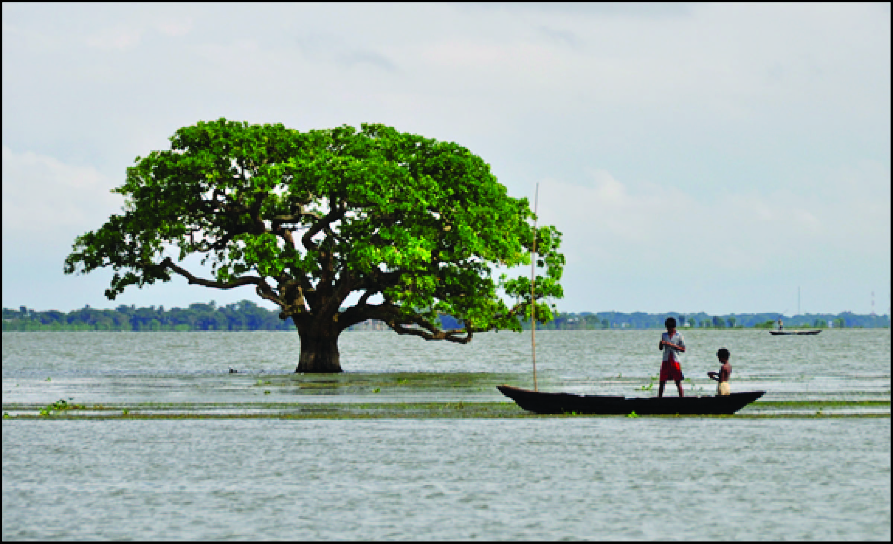

Welcome to Crossroads Geology Conference 2016!
Crossroads will be held at Indiana University-Bloomington
April 1 & 2, 2016
Abstract Deadline has been extended to March 25, 2016!
The student members of the Rho chapter of Sigma Gamma Epsilon at Indiana University invite you to participate in the annual Crossroads Geology Conference at Indiana University. This conference is a student-organized event featuring research presentations by graduate and undergraduate students in the geological and environmental sciences from a number of regional colleges and universities, at Indiana University in Bloomington.
Updates and News
- Presenters: Talks should be ~15min including time for questions.
- The 2016 Program has been uploaded to the abstract submission section.
- The limestone tour on Saturday has been canceled and replaced with a petroleum systems short course.
- Abstract submission is now open.
- A list of the 2016 judges is now available, under the the judges tab.
Visiting Students
If you would like us try to place you with a student host, please indicate so on your abstract submission.
Previous Years Awardees

2013, 2014, 2015, and 2016 Programs are available for download from the Abstract Submission page.
This page will be updated as more information becomes available (e.g. tentative schedule, keynote speakers...). If you can't find what you're looking for, contact us at davids@indiana.edu
Abstract Submission
To submit your abstract please download the abstract template, fill it out accordingly and email it to crossroadsgeologyconference@gmail.com. Abstract guildlines are on the first page of the abstract template
An example of a completed abstract form can be downloaded here.
Archived Abstracts
2016 Judges
Sponsors
Constructing a Land of Superlatives: From process to morphology to stratigraphy in the Ganges-Brahmaputra River delta
The Bengal basin of South Asia lies at the convergence of three tectonic plates, a position that has made it one of the principal repositories for Himalayan sediment over the past 40 million years. Today, the nearly 20-km thick pile of sediment remains the site of confluence for two great rivers of the world, the Ganges and Brahmaputra, which together drain 75% of the monsoon-drenched Himalayan orogen. Delivering a billion tons of sediment per year, these laterally-mobile braided streams have fueled construction of ~150,000 km2 delta system over the Holocene. At the coast, the delta system interfaces with a dynamic marine environment at the head of the Bay of Bengal, where 3-m tides extend 100 km inland of the shoreline, along with storm surges from the nearly annual tropical cyclones. Sediment transported by these tides and marine incursions are essential to maintaining vast areas of the delta that receive little direct fluvial input. In addition to being geologically superlative, this massive river delta is also home 150 million people living in Bangladesh and West Bengal, India, giving the system great societal relevance – and environmental strain. In this talk we will set the regional background of South Asia, and then connect modern processes to the current deltaic landform that has been built over recent millennia. From these surficial perspectives, we will then move below ground to investigate stratigraphic architecture of the >90-m thick Holocene delta, the development of which ensued promptly after termination of the Younger Dryas cold period ~11,500 years ago.
Contact Details
- Scott David
- davids@indiana.edu
- Department of Geological Sciences
1001 E 10th Street
Bloomington, IN 47405